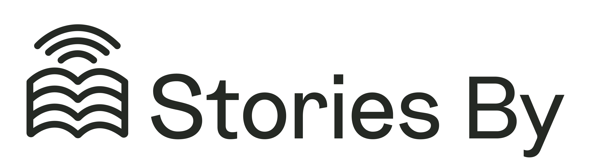
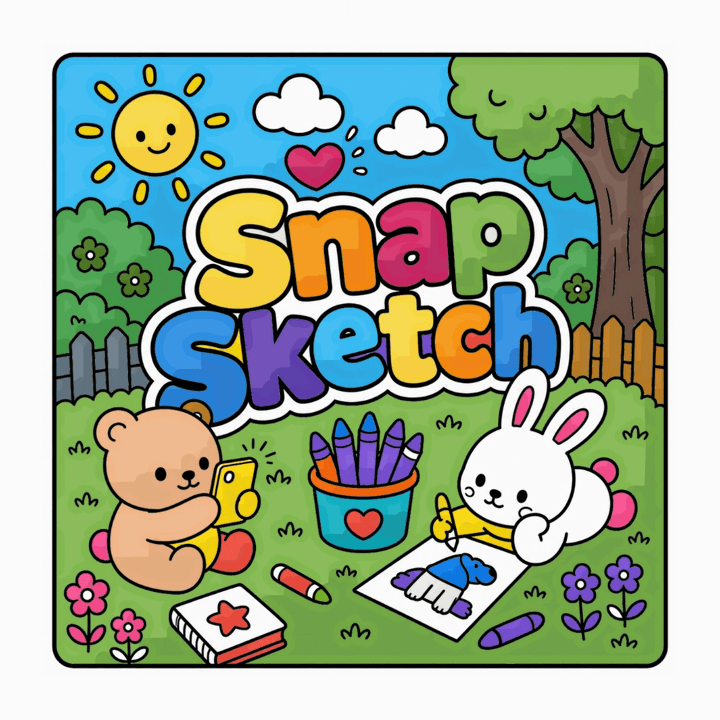

In my spare time I build my own products with Claude, blending my documentary sensibilities with a design background focused on the intersection of transcription and artificial intelligence.
I love building tools that help filmmakers work, help people connect over their shared stories, and help others learn a language visually. Here are a few of them.
Mark the moment as it happens, and your selects build the edit for you. Earwig turns long interviews into usable chunks, so you can cut faster and communicate clearly with the edit.
earwig.io→
A place for loved ones to gather stories from their relatives, learn more about their lives, and turn what they hear into a lasting keepsake.
storiesby.app
Turns your world into a colouring book that then teaches you the language of your choosing — learning to see and to speak, one drawing at a time.
snapsketch.ukA note taker that keeps you on track through your meetings, simplifies difficult language, and lets you ask questions about what was said.
listenin.ukIf you'd like to talk to me about building, filmmaking, or whatever else, then reach out. I'd love to hear from you.